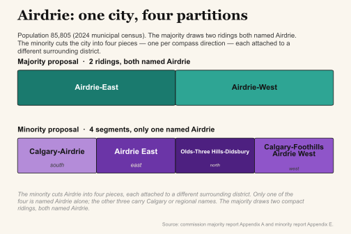
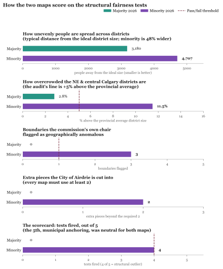

Is the minority map a gerrymander? On the audit’s joint partisan-bias score, the commission’s minority map sits in the extreme tail of 1,010,000 algorithmically-drawn neutral comparison maps — approximately 66 of them reach its tipping-point seats@50/50 value, with a dependence-robust joint upper bound of roughly 1 in 350,000 under that reference distribution. The majority map falls well within normal range.
TL;DR
Alberta’s redistribution commission split 3–2 in 2026 and produced two different proposed maps. The government set both aside and assigned redistricting to a five-member committee of MLAs (the Lunty committee), expected to report in November 2026. Neither commission map is law.
This audit tested both commission maps the same way, using 1,010,000 computer-drawn neutral maps built from the official Elections Alberta shapefiles as a reference point. The majority proposal sits within the neutral range on every pre-registered test. The minority proposal crosses four of five structural tests, and its partisan-fairness seat split at a 50/50 vote is reached by roughly 66 of those 1,010,000 neutral maps — a dependence-robust joint upper bound of roughly 1 in 350,000 under that reference distribution. The audit’s efficiency-gap metric for the minority sits at the 94th percentile — near, but below, the audit’s own 95th-percentile threshold.
The audit measures outcomes, not intent. When the Lunty committee releases its map, this audit will apply the same tests to it.
Pre-registered falsification conditions and retraction commitments are in §9.
Two maps — and who drew them #
When the commission split, it didn’t produce one map with a dissent attached. It produced two complete, competing maps. Both are legal. They just draw the lines differently.
A boundary commission has five members. The Chief Justice of Alberta names the chair — the neutral seat, here held by Dallas K. Miller, a former Court of King’s Bench judge. The party in government names two members; the opposition names two.
This commission divided three to two. The chair and the two opposition-appointed members backed one map — the majority report, because most of the commission signed it. The two government-appointed members backed the other — the minority report.
The map the audit flags as the more one-sided is the minority report — the one the two government-appointed members drew. The audit can’t show whether they meant to, and doesn’t try. It shows what the map does.
The cover map at the top of this page lets you compare them yourself. Flip between the two proposals and today’s map, find your own riding, and watch which neighbourhoods get grouped together or split apart.
A committee of MLAs has since set both maps aside to draw its own, due later in 2026 — a move this site looks at on the Law page. These two remain the audit’s clearest test case, and the same tests will apply to whatever the committee produces.
2: How the Commission Split #
Alberta's Electoral Boundary Commission finished its work on March 23, 2026 and could not agree. Three commissioners produced one map; the other two produced a different one. Commission Chair Justice Dallas K. Miller and two opposition-nominated commissioners wrote the majority report; two government-nominated commissioners — Dr. Julian Martin and John D. Evans — wrote the minority report. The split centred on how to draw boundaries in fast-growing urban-edge communities. The majority gave Airdrie two districts; the minority four. The majority drew northwest Calgary's divisions close to the provincial average; the minority drew them 11.5% above it. Both maps follow the same statute. Both are legal under the Electoral Boundaries Commission Act. The disagreement was about which specific geographic configurations best served the communities being drawn. Alberta's governing party is the United Conservative Party (UCP); its main opposition is the New Democratic Party (NDP). Smaller parties — the Alberta Party, the Liberal Party of Alberta, and others — contest seats too, but their combined provincial vote share has been low enough in recent elections that it does not materially affect the audit's partisan-fairness calculations, which are grounded in the 2023 UCP–NDP split. This audit measured both maps using the same methods, applied identically. Three findings stand out.
- The two maps differ on six things you can measure without looking at any election results: how evenly people are spread across districts, whether voters are concentrated, how badly cities are cut up, whether borders follow city limits, the shape of the districts, and how many boundaries Commission Chair Justice Miller himself flagged as anomalous in writing (§5.8.2 of the majority report and Appendix C). The minority map differs from the majority on every one of them.
- Every measured difference moves in the same direction. Everywhere the two maps diverge — northwest Calgary, Airdrie, urban areas with clear city limits — the minority map draws boundaries that spread NDP votes thinner and let UCP votes count more efficiently. The communities most reshaped by the minority map are the same communities where the NDP is strongest. The audit cannot determine intent. It can measure effect.
- The process now promoting the minority map is without precedent among the Canadian redistribution cycles this audit reviewed — an assessment political scientist Duane Bratt (Mount Royal University) shared in correspondence with the author. None of the reviewed provinces lets a cabinet hand redistricting to a committee its own party controls partway through a redistribution cycle. Most provinces either require the legislature to debate the commissioners' map first, or give the commission's map automatic effect unless overridden. Alberta does neither. On April 16, the government set both commission maps aside and assigned the work to an MLA committee a majority of whose members come from the governing United Conservative Party (UCP); the committee's full composition and mandate are detailed in §7. Alberta's Electoral Boundaries Commission Act requires the legislature to pass a separate Electoral Districts Act to give a commission report legal effect — the commission report itself changes nothing. Most other provinces make a commission's report legally effective unless the legislature actively overrides it; Alberta's default reverses it, meaning the governing party controls whether any commission map ever becomes law. The government's stated justification was to implement Commission Chair Justice Miller's Recommendation 5. But Miller had written the recommendation specifically to dissuade the legislature from accepting the minority map, and his majority colleagues did not endorse it. Recommendation 5 was also geographically specific: one additional rural seat south of Edmonton, and one in Clearwater County and western Mountain View County — both far from the fast-growing Calgary and Edmonton urban-edge communities where the commission actually split. It was not an invitation to redesign those contested boundaries. The government adopted the seat count while handing a committee it controls authority over exactly the lines the commission disagreed on.
The process is its own finding, separate from the maps.
Structural audit results — before any statistics:
The majority map crosses zero of five pre-registered structural thresholds. The minority map crosses four of the five; the fifth (anchoring) is neutral — both maps fall within the 70–85% Canadian norm. These are geometric measurements — population spread, , Airdrie split count, NW Calgary population excess, and the seven boundary configurations Commission Chair Justice Miller himself flagged in writing (§5.8.2 of the majority report and Appendix C) — requiring no election data and no statistical sampler. The next section tests both maps against 1,010,000 computer-generated neutral maps and reaches the same conclusion through a completely different instrument. Three independent instruments — geometric, judicial, and statistical — converge.
3: The 1,010,000-Map Litmus Test #

The table compares the two maps. The first five rows use no election results — they're properties of the lines themselves. The last two depend on how votes were attributed to each district.
| What was measured | Majority map | Minority map | Direction / Beneficiary |
|---|---|---|---|
| Population spread across districts (tighter is better) | 3,180 | 4,707 — 48% wider | Structural (Reduces vote equality) |
| NW Calgary population excess above average | 2.8% | 11.5% | UCP (Packs urban NDP votes) |
| Airdrie split | 2 divisions | 4 divisions | UCP (Cracks urban/suburban power) |
| Borders that follow existing municipal lines | 80% — within norm | 72% — within norm | N/A — both within Canadian norm (70–85%) |
| Boundaries flagged by the commission chair | 0 | 3 | N/A |
| Seats at 50/50 votes (percentile in 1,010,000-map simulation) | 46.1% — p78 (normal range) | 51.7% — p99.99 (fewer than 100 of 1,010,000 reach this) | UCP |
| Efficiency Gap (percentile in 1,010,000-map simulation) | +0.1% — p15.5 (normal range) | +4.0% — p94.4 | UCP |
| Packing-cracking neighbourhood pattern | 6 coupled chain signals | 2 (pre-registered PASS) | Neutral — minority achieves partisan effect via hybridization, not adjacency drain (§5.3.5) |
VOCABULARY
Efficiency gap. A single number that measures how lopsidedly a party's votes are translated into seats. Positive numbers favour the UCP; negative favour the NDP. The audit uses ~5% as Alberta's outlier line — the value exceeded by only 5% of the 1,010,000 neutral Alberta-specific simulations. This threshold is not borrowed from US or general literature; a threshold calibrated to another jurisdiction would be wrong because Alberta's natural geography produces a different neutral range.
Mean-median difference. The gap between a party's median district vote share and its mean district vote share. When one party wins many close races, the median sits above the mean — those votes are distributed efficiently. When a party wins many races by large margins, the mean sits above the median — votes are being wasted. A large mean-median gap in one direction flags structural inefficiency in how one side's votes are spread across districts.
Percentile ranking. In this audit, a "percentile" is a rank within the 1,010,000 neutral simulated maps. "p94" means 94% of neutral maps score lower — the real map is more extreme than 94% of neutral draws. "p99.99" means fewer than 1 in 10,000 neutral maps reach the level.
Anchoring. The fraction of an electoral border that lies on a pre-existing administrative line — a city limit, a school-division boundary, a Statistics Canada census line.
The bottom rows depend on election results. The seats@50/50 test holds the electorate at perfect parity (UCP and NDP each win exactly half the votes province-wide) and asks how many seats the map awards the UCP. A neutral Alberta map produces a median around 44.8% UCP seats. Alberta's geography — NDP voters concentrated in city cores, UCP voters spread across rural ridings — gives the NDP a small efficiency advantage at neutrality. The majority map at 46.1% sits at the 78th percentile of the 1,010,000-map simulation, well inside the normal range. The minority map at 51.7% sits at the 99.99th percentile: fewer than 100 of 1,010,000 neutral draws reach that value. The efficiency gap number measures how lopsidedly each party's votes get translated into seats. On the official Elections Alberta shapefiles the minority's efficiency gap is +4.0%, placing it at the 94.4th percentile — just below the audit's 95th-percentile outlier line. The opening questions at the top of this page unpack the consequences.
The last row is where the minority map has fewer coupled chain signals than the majority on the neighbour-drain test: 2 against the majority's 6 (and the 2019 enacted map's 5). The audit pre-registered this test before measuring, and the minority's lower count is a genuine pre-registered PASS — the minority does not show the classic pack-and-drain adjacency pattern. It is the single test where the minority numerically outperforms the majority. §5.3.5 of the academic report explains why: the minority achieves its partisan effect through hybridization (city-splitting that internalises packing and cracking within individual EDs), which is invisible to an adjacency-chain test that only measures how packed districts cluster next to cracked ones.
4: Cracking, Packing, and Draining #
Three moves, one playbook
Packing means cramming one party's voters into districts the party wins by landslides — each packed ballot still counts, but it contributes nothing beyond victory. Large, lopsided wins. Wasted votes.
Cracking means splitting a community across multiple districts so it wins none of them outright. A city strong enough to carry two seats gets carved into four, each tethered to a different rural area. Diluted votes. No seat for anyone.
Draining is the spatial companion: packed and cracked districts are placed next to each other so over-concentrated supporters on one side "drain" voting power away from the contested districts nearby. The adjacency pattern amplifies both effects — packing and cracking reinforce each other across district lines.
All three can occur without any explicit partisan intent. What the audit measures is whether the pattern — and its statistical magnitude — is consistent with what a neutral map-drawing process produces. Full methodology at §5 of the technical report.

The five commissioners worked from the same statutory rules, the same provincial geography, the same archive of 1,140 public submissions, and the same demographic data. Their two competing drafts agree on most of Alberta. Where the drafts diverge, they diverge on choices someone in the room had to make. Three of those choices are worth seeing as choices, not numbers.
It splits the City of Airdrie into four pieces. The law caps each electoral division at one-and-a-quarter times the provincial average, so Airdrie needs at least two divisions. The majority map gives it two. The minority gives it four — north to Calgary-Nolan Hill-Cochrane, east to Airdrie East, west to Calgary-Foothills-Airdrie West, and centre-south to Calgary-Airdrie — each one stapled to a different rural or Calgary-edge district. An Airdrie resident with a question for her MLA has to know which quarter of the city she lives in before she can call the right office. Her neighbours two blocks over will give her three different answers. The PTA at her child's school cannot send a single delegation to one MLA on a school-funding question; they have to coordinate four delegations to four offices, each MLA primarily accountable to a different rural or suburban constituency. The minor-hockey association, the food bank, the Chamber of Commerce — every organization that operates citywide now operates across four provincial ridings.
WHY AIRDRIE MATTERS
Airdrie is the largest Alberta city without its own MLA. At 85,805 people (2024 municipal census) it is bigger than Red Deer; it has one council, one tax bill, one school division — every civic system treats it as a unit.
Splitting it across four provincial divisions — Calgary-Airdrie, Calgary-Foothills-Airdrie West, Calgary-Nolan Hill-Cochrane, and Airdrie East — each primarily identified with a different surrounding jurisdiction, removes Airdrie from the political map at the level of government that draws it. The city has 85,805 residents and zero seats in the legislature where a majority of voters call the place home.
A four-way split is invisible to every partisan-fairness test except the one that asks: can a voter find their MLA?
Where it departs from municipal lines, it departs at strategically important places. When electoral maps follow the edge of a city or town, voters recognize where their division begins and ends — the property-tax line, the school-division line, the local-election ward line, and the provincial-election line all coincide. Statistics Canada publishes these boundaries for free. On official Elections Alberta shapefiles, both maps follow municipal lines at comparable overall rates: the majority at 80%, the minority at 72%, both within Canada's 70–85% norm (Quebec: 78%, Ontario: 82%, BC: 71%; comparator commissions documented in the monograph). (The audit's initial provisional analysis showed the minority anchoring at only 15%; the figure did not survive recomputation on official shapefiles — see the correction note below.) The striking observation is not the overall rate but where the minority's departures are concentrated: the three boundaries the commission's own chair flagged as anomalous — Rocky Mountain House–Banff Park 's extension into uninhabited national-park land, the Nolan Hill–Cochrane lasso corridor, and the Olds–North Airdrie reach — are each departures from pre-existing civic geography in the exact urban-edge zones where pairing urban and rural voters most directly affects which party wins the seat.
The minority commissioners gave reasons for each of the three flagged boundaries. For Rocky Mountain House–Banff Park, they cited geographic size, the Highway 22 corridor, and the proximity of First Nations reserves to Rocky Mountain House; the commission chair called the extension into uninhabited national park land "a bad faith effort" to satisfy the area criterion, and the phrase appears in the commission's official final report. For Nolan Hill–Cochrane, they cited shared transportation and employment ties between northwest Calgary and Cochrane; Statistics Canada journey-to-work data shows only 35.8% of Cochrane workers travel to Calgary at all, with most working within Cochrane itself. For the Olds–North Airdrie reach, they cited Highway 2 corridor continuity; the audit found the specific Airdrie extension fails on population grounds. Independent check found five of the minority's six published sub-rationales fail or only partially hold against primary data.
One area of Calgary is carved up to concentrate NDP voters into larger-than-average divisions. In Calgary's northwest quadrant , the minority map's divisions average 11.5% above the province-wide population — versus 2.8% on the majority. The same geographic zone, drawn by the same commission under the same constraints, produces districts a quarter larger on one map than on the other. This fits the structural signature of packing: concentrating one party's voters into fewer, larger districts so each of their ballots weighs less. Packing and cracking (splitting a party's voters thinly across districts they narrowly lose) are the two classic gerrymandering moves; both shrink a party's seat count below its vote share.
The commission chair — appointed under the same Act, working from the same submissions — flagged three boundaries on the minority map as geographically anomalous: Rocky Mountain House–Banff Park's extension into uninhabited national park land; the Calgary-Nolan Hill–Cochrane lasso-shaped corridor; the Olds–Three Hills–Didsbury reach into north Airdrie. The majority received zero such flags from the same chair. (The chair's published criticism covers seven boundary configurations in total — four geometric flags in the main report and three in Appendix C. This audit independently confirmed anomalous geometry for three of the four geometric flags; the fourth, Calgary-Foothills-Airdrie West , did not meet the audit's confirmation threshold.) Beyond the chair's geometry flags, the audit's own cracking-signature test (academic §5.3.2) flags the four-way Airdrie split on every criterion — a community split that leaves Airdrie's residents a minority in all four ridings, where the majority's two-way split shows none; Cochrane and Chestermere come up cracking-adjacent. Some of what the audit's math flags, the chair did not. The audit measures the structural effect, not intent.
Interlude: What this means for you and your community
Set aside, for a moment, the question of which party gains or loses seats. Politicians and parties tend to frame this as a fight over power concentration in the legislature, and at the legislative scale it is. But power concentration in the legislature is not where you experience these maps. You experience them through three concrete questions about your own district:
- Where does your MLA live?
- Are they invested in your community?
- Will the demands of the head dominate the demands of the tails?
Every other framing — partisan advantage, supermajority threshold, statistical extreme — eventually points back to those three. The five rungs below walk through how each proposed map answers them, at five scales.
You.
Your electoral district decides who represents you in the legislature. Right now you live in one of 87 districts. Under both proposed maps you may live in a different one — possibly with a different MLA, possibly anchored to different neighbouring communities. If you don't know what district you're in right now, or who your MLA is, you're not alone: most Albertans couldn't name their MLA. But the boundary lines are not abstract. They decide whose phone number is on your local representative's office wall, whose neighbourhood petition gets your name attached to it, whose concerns your MLA hears about first. The postal-code lookup on this site shows which district you sit in under each proposal. If your district changes, your representative changes — and your representative's relationship to your community changes with it.
Your community.
Communities are not abstract either. A high school's catchment area, a chamber of commerce, a faith community, a neighbourhood association — these are real groupings of people with shared local concerns. When a boundary line cuts through them, no single MLA is responsible for the whole. Take Airdrie under the minority proposal: a city of roughly 85,800 people sliced into four electoral districts, each anchored to a different rural hinterland. No single representative is accountable for Airdrie as a city. The same dynamic plays out anywhere a town, neighbourhood, or recognised community of interest is split — the bigger the split, the weaker the representation. The audit measures municipal anchoring (what fraction of each district's perimeter follows existing municipal lines), and the minority proposal scores notably lower than the majority on the anchoring test.
Your municipality.
When a city is fractured across many representatives, its ability to bargain on provincial decisions weakens. A council asking for transit funding, a school board negotiating a new school, a mayor lobbying for highway extensions — each of those goes better when the city can point to a few MLAs who owe accountability to the city as a whole. The minority proposal splits Calgary's northwest quadrant across multiple districts whose vote-share patterns suggest packing (concentrating one party's voters into a few high-margin seats) on top of cracking (splitting the other party's voters across many low-margin seats). Whether the pattern is intentional is a question the audit cannot answer — boundary geometry doesn't reveal intent. What it can say is that the four statistical measures flag the same districts the structural tests flag, and that the alternative proposal does not produce the same fingerprint.
Your region.
If you live outside Alberta's cities you have probably noticed political conversations about boundaries always seem to centre the cities. It's a fair complaint, so let's be direct about what this audit does and does not say about rural Alberta.
What it does not say: rural Alberta has too many seats. The EBCA allows district populations to vary by up to 25% so one rural MLA isn't representing a geography the size of southern France. Canadian courts treat the variance as legitimate. Both proposed maps preserve it. Nothing in this audit changes it.
What it does say: in several places on the minority proposal, rural communities are being attached as the tail of a district whose population centre sits in a city. Look at how the minority proposal handles Airdrie — a city of about 85,800 sliced into four districts, each one extended out into a different stretch of rural countryside. The population centre of each new district is the urban slice, not the rural tail. An MLA elected from that kind of district is most likely to live, campaign, and prioritise where the votes are — which means rural communities formerly represented by a dedicated rural MLA become the back half of an urban-led seat. That pattern repeats on the minority proposal in ways it does not on the majority proposal.
The audit doesn't propose taking seats away from rural Alberta. It asks whether the lines respect the rural communities those seats are meant to represent, or whether rural geography is being used as ballast to absorb urban votes into districts whose centre is somewhere else. If you live in one of those rural tails, the question of which map gets enacted decides whether your MLA represents the rural community you actually live in, or an urban district whose lines happen to include your land.
Your province.
The legislature is what you get when you sum every district's answers to the three questions above. If most districts are anchored to communities whose MLAs actually live in them, the legislature represents those communities. If most districts have rural tails attached to urban heads, the legislature represents the heads — and the tails get whatever attention is left over. The partisan question — which party wins a majority — is downstream of that. The supermajority question — whether one party crosses 60 of 89 seats and unlocks procedural shortcuts like waiving notice periods or accelerating bills through multiple stages in a single day — is downstream of that. At a hypothetical 50/50 provincial split, the audit's measurements place the minority proposal at a structural extreme: fewer than 100 of the 1.01 million neutral comparison maps produce the same kind of seat imbalance. Whether that imbalance pushes a party past 60 seats at the vote shares Albertans actually deliver is a question this audit has not yet directly tested; the opening questions at the top of this page are honest about that gap. Whether the answer to any of these questions matters enough to act on is, again, a question for you.
Context: A short history of gerrymandering
The word comes from 1812. Massachusetts governor Elbridge Gerry signed off on a state-senate map whose districts were so contorted in his party's favour that a Boston cartoonist drew one of them as a salamander — wings, claws, a forked tongue. The cartoonist's pun, Gerry-mander, stuck. The shape stuck too: two centuries later, the word still means drawing electoral lines to engineer a partisan outcome.
The term endures because the problem endures. Anywhere voters choose representatives from geographic districts, someone has to draw the lines, and the lines can be drawn many ways. Different countries have arrived at different answers about who should do the drawing and what should constrain them.
The United States treats partisan gerrymandering as a problem the federal courts mostly cannot fix. In Rucho v. Common Cause (2019), the U.S. Supreme Court ruled that partisan gerrymanders are "political questions" outside its jurisdiction. Some states (California, Michigan) have responded by creating independent citizen commissions to draw their own lines; others (Texas, North Carolina) have continued to draw openly partisan maps and defended them on the basis that Rucho permits it.
The United Kingdom uses four permanent Boundary Commissions — one each for England, Scotland, Wales, and Northern Ireland — staffed by judges and senior civil servants. They redraw lines roughly every eight years against fixed rules (population equality, geographic coherence, respect for local government boundaries). Parliament can in theory reject the commissions' recommendations, but in practice virtually never does; by convention, the commissions' judgment stands.
Australia delegates the work to the Australian Electoral Commission, a federal independent agency with full authority over both election administration and boundaries. Redistributions happen automatically when a state's seat count changes or seven years pass since the last one. The commissioners' decisions are reviewable on procedural grounds but not on partisan ones. As in the U.K., gerrymandering as Americans know it is virtually unheard of.
These three cases bracket the spectrum: courts staying out (U.S.), independent commissions with strong parliamentary deference (U.K.), and a permanent independent agency with full authority (Australia). Canada sits somewhere different again — which is what the next section takes up.
Context: Canada is different — and similar
Canada belongs to the same family as the U.S., the U.K., and Australia. We elect single members from geographic districts under first-past-the-post. We redraw the lines periodically — federally after each decennial census, provincially on staggered schedules. We inherited the basic machinery from the same Westminster roots. So far, no surprises.
What sets Canada apart is the test the lines have to pass.
In American constitutional law, the binding rule is one person, one vote — districts must have populations as nearly equal as practicable, and large departures require strict justification. In Canadian constitutional law, the binding rule is different. Section 3 of the Canadian Charter of Rights and Freedoms guarantees every citizen the right to vote. In Reference re Provincial Electoral Boundaries (Sask.) — the 1991 Saskatchewan Reference, the leading case — the Supreme Court of Canada interpreted the right as a right to effective representation, not a right to mathematical equality of district populations.
That distinction matters. Effective representation allows district populations to vary, sometimes substantially, when there are good reasons: vast rural geographies one MLA cannot reasonably serve at standard population density, communities of interest that should be kept together, minority representation that mathematical equality would dilute. The Saskatchewan Reference made that flexibility constitutional. The EBCA's 25% population variance — the rule that protects rural Alberta seats — flows directly from it.
The catch is that flexibility cuts both ways. If a commission can legitimately depart from population equality for the right reasons, it can also depart from population equality for the wrong ones. Canadian law has no American-style mathematical floor to fall back on. It has the effective-representation test, applied by judges, after the fact, in litigation. Most jurisdictions guard against the wrong reasons with structural protections: federal redistricting commissions are insulated by statute and their recommendations take effect automatically if Parliament does not act on them within a deadline. Quebec uses a permanent independent commission whose work the National Assembly can override only with a two-thirds supermajority. British Columbia operates under a similar default-adopt rule.
Alberta is the exception. Under the Electoral Boundaries Commission Act, the commission's report is a recommendation only — the legislature must vote to enact it. Approval is normally a formality. In the 2026 cycle, the commission split 3–2 and produced two competing proposals; the legislature created a separate MLA committee, chaired by a Premier-appointed MLA, to choose between them. Nothing in Canadian constitutional law required the committee to exist. Nothing requires its choice to follow the commission's process. This is the structural gap this audit is examining.
So when Canadian courts say "gerrymander" isn't their legal vocabulary, they are not saying the underlying concept does not apply here. They are saying the test is different — effective representation, not mathematical equality. Whether the minority proposal meets that test is exactly the question this audit has measured the geometry against, and exactly the question only a judge can answer definitively. The Saskatchewan Reference reasoning in full, the contrast with other provinces, the standing question, and the available reform pathways are treated in the references section below.
5: Effects on Representation #
LANE 1 AND LANE 2
Lane 1 (numbers) uses election results to test whether the map converts votes into seats fairly — it asks how the map performs across different vote splits. Lane 2 (structure) examines only the drawn lines — city splits, population spread, boundary shapes — with no election data at all. Each lane is independent: a map can fail one while passing the other. The minority proposal fails both; the majority passes both.
Lane 1 depends on which election results you score the maps against. Lane 2 does not. The structural evidence is in the maps themselves — drawn lines, split cities, where the boundaries do and don't follow administrative lines that exist for other reasons. On these tests, the two maps are not close.

The same five tests in tabular form, with each test's threshold stated alongside the result. The bottom row is the audit's summary — the count of tests each map fails out of the five.
| Test | Majority map | Minority map | Direction / Beneficiary |
|---|---|---|---|
| Border follows existing municipal lines (70–85% Canadian norm) | 80% — within norm | 72% — within norm | N/A — both within Canadian norm |
| Population spread (tighter is better) | 3,180 | 4,707 — 48% wider | Structural (Reduces vote equality) |
| NW Calgary population excess above average | 2.8% | 11.5% | UCP (Packs urban NDP votes) |
| Boundaries flagged by the commission's own chair | 0 | 3 | N/A |
| Airdrie split (constraint minimum: 2) | 2 pieces | 4 pieces | UCP (Cracks urban/suburban power) |
| Pre-registered summary (≥ 4 of 5 = outlier) | 0 of 5 fired | 4 of 5 fired (anchoring test neutral — both maps within Canadian norm; remaining 4 tests all fire) | UCP |
A separate finding, applied only to the minority: five of six of the minority commissioners' published rationales fail under independent check. The test runs against the minority only because the majority did not publish a contested-redraw rationale list — the audit cannot apply it symmetrically, and it is reported here as a single flag rather than as additional rows in the structural-irregularity count. (A seventh redraw the audit had previously listed turned out to rest on a federal-boundary claim untraceable in the minority report; it has been removed rather than left as a weak claim.)
The audit also tested the chair's separate, blanket assertion in Appendix C that the minority's seven contested hybrid configurations had no public support in the 1,140+ public submissions. A keyword search across the full submission archive (94% machine-parsed, 6% image-only and excluded; methodology and per-configuration evidence at findings/submission_search_findings.md) returned a more nuanced picture than either the chair's blanket claim or its blanket dismissal: the chair was right on three of seven (Airdrie 4-way split, Calgary–Nolan-Hill–Cochrane hybrid, and the St. Albert minority alternative each lack any documented support), wrong on three of seven (Rocky Mountain House–Banff Park drew an explicit, detailed proposal from at least one Clearwater-area submission plus several aligned ones; Olds–Three-Hills–Didsbury was supported by Beiseker residents in writing; Chestermere drew multiple submissions opposing a Calgary merger that materially align with the minority's intent), and partially wrong on one (Red Deer hybrids drew a peri-Red-Deer hybrid proposal from a sitting Red Deer councillor, with directional but not configuration-exact alignment). The chair's Appendix C "no public support" sweep is therefore demonstrably overbroad — three of seven are demonstrably false — but it is not invented out of whole cloth, since three of seven do hold up. This finding cuts against the chair, not against the minority.
On Lane 2, the majority crosses zero structural thresholds. The minority crosses every one of them by a wide margin. The count is a raw tally rather than a calibrated family-wise probability — its weight comes from directional unanimity (every firing test pointing the same way), not from a joint null-distribution calculation. The statistical lane (§3) supplies the joint probability through a different instrument.
6: When a fair-looking map isn't #
A NOTE ON LEGAL TERMINOLOGY
"Gerrymandering" has no legal definition in Canadian law. The word is used throughout this report in its everyday political sense — manipulating electoral boundaries for partisan advantage. The legal tests actually applying in Canada are different: whether boundaries provide "effective representation" under s.3 of the Charter of Rights and Freedoms (the constitutional standard the Supreme Court of Canada set in the 1991 Saskatchewan Reference), and whether the commission followed the rules of Alberta's Electoral Boundaries Commission Act. The audit's findings are evidence bearing on those legal questions. They are not proof of a legally-defined wrong, and this report does not describe them in those terms.
The cleanest single question to ask of any electoral map is this: if the province's vote split exactly evenly between the two main parties, what seat count would the map produce? This holds the electorate constant and asks the map alone what it does.
To answer this, the audit generated 1,010,000 computer-simulated, mathematically neutral Alberta maps. The simulation used the official Elections Alberta shapefiles and held to the exact same statutory rules and geographic boundaries the commission used. The commission's two 2026 maps were then placed into that distribution to see how normal they are. The simulation ran four independent chains of 252,500 steps each, with the base seed drawn from the Cloudflare drand beacon and pre-registered at OSF before execution.
HOW THE SIMULATION WORKS
MCMC (Markov Chain Monte Carlo) is a method for exploring a large space — here, the space of all legal Alberta maps — by taking random steps from a starting point. Each step proposes a small swap between adjacent districts; if the result stays within the statutory rules, it becomes the new starting point. After enough steps, the visited maps form a representative sample of legal plans. The simulation is seeded from the Cloudflare drand public randomness beacon to prevent any cherry-picking of starting conditions.
ReCom (Redistricting Compiler) is the specific algorithm used here. Each step merges two adjacent districts into one region and re-splits it randomly into two new valid districts, preserving contiguity and population balance by construction — so the algorithm never needs to reject an invalid proposal.
PRE-REGISTRATION
Pre-registration means writing down the exact tests, thresholds, and predicted directions before looking at any data, and locking those commitments into a public time-stamped record. The Open Science Framework (OSF) is the public repository where this audit's commitments are filed. It prevents retrofitting: if a result doesn't emerge cleanly, the threshold cannot be changed after the fact and then presented as always having been the test. All five structural tests and four partisan-fairness metrics in this audit were registered at OSF before any simulation was run.
In Alberta, the neutral answer is not 50/50. Across 1,010,000 computer-simulated legal Alberta maps, the median map gives the UCP only 44.8% of the seats at 50/50 votes — a typical Alberta map under neutral votes hands the NDP a small seat majority. This is counterintuitive but mechanical: rural UCP voters win their ridings by 60-40 margins (wasting many "extra" UCP votes), while urban NDP voters win their ridings by tighter 51-49 margins (wasting fewer NDP votes per win). At neutrality, NDP comes out ahead on seat efficiency.
The full distribution from the canonical 1,010,000-map simulation:
| Where the map sits | UCP seats at 50/50 votes |
|---|---|
| Median Alberta map | 44.8% — NDP slight seat majority |
| 95th-percentile map | 47.1% |
| 99th-percentile map | 48.4% |
| Maximum across 1,010,000 maps | below 51.7% (fewer than 100 plans reach this value) |
A note on seat counts. The 2026 commission maps each have 89 districts; the audit's computer simulation runs on the 87-district 2019 map (its starting substrate); the November Lunty committee will produce 91. All percentages are seat shares, comparable across these denominators. The simulation uses the 2019 map as its starting point because the ReCom algorithm needs a legally enacted map to propose swaps from — the 2019 map is the last enacted Alberta electoral map. Using either commission proposal as the substrate would be circular: we would be measuring whether a map is extreme compared to maps derived from itself.
The results — placing the three real maps in this distribution — point to a specific, surgical pattern of boundary drawing.
All four statistical measures fire simultaneously
When the official Elections Alberta shapefiles are used, the minority map is a statistical outlier on every partisan-fairness metric — not just the tipping-point one.
| Map | Efficiency gap | Mean-median | Declination | Seats at 50/50 |
|---|---|---|---|---|
| Majority 2026 | +0.1% (p15.5) | −3.6% (p1) | −0.027 (p20) | 46.1% (p78) |
| Minority 2026 | +4.0% (p94.4) | +1.0% (p99.98) | +0.077 (p98.8) | 51.7% (p99.99) |
The majority map sits comfortably inside the normal range on three of four metrics. Its mean-median sits at p1 (= p0.92) in the NDP-favourable direction — an unusual result but pointing the wrong way to help the UCP. The majority map's close adherence to municipal boundaries places NDP-heavy urban cores into their own compact districts, where NDP votes win by efficient margins while UCP rural wins tend to be by larger margins; this mild structural NDP efficiency advantage is what shows up in the mean-median measure. The minority map is in the tail on all four, each pointing in the same partisan direction.
The 50/50 tipping point: fewer than 100 of 1,010,000 neutral maps reach it
The tipping-point metric introduced above — UCP seats at a 50/50 provincial vote — is the most intuitive way to compare the three maps.
| Map | UCP seats at 50/50 votes | Where it sits |
|---|---|---|
| 2019 enacted | 46.0% | 78th percentile — inside the normal range |
| Majority 2026 | 46.1% | 78th percentile — well within bounds |
| Minority 2026 | 51.7% (46 seats) | 99.99th percentile — fewer than 100 of 1,010,000 neutral draws reach this |
Fewer than 100 of 1,010,000 computer-simulated neutral Alberta maps produced a <code>seats@50/50</code> value as high as the minority proposal's. Based on actual recent voting patterns, it would award the UCP 60 seats (compared to 55 in the majority proposal). The majority proposal is the kind of map a neutral procedure routinely generates. The minority proposal is the kind of map you have to specifically aim to draw.
What this means in plain language
The minority proposal sits in the extreme tail of the 1,010,000-plan ensemble on three of four partisan-fairness metrics, with the fourth (efficiency gap, +4.0%) at the 94th percentile — near, but below, the audit's pre-registered Alberta-calibrated threshold of the 95th. The two joint-test channels share underlying efficiency-gap data and are not statistically independent, so combining their p-values under Fisher's method overstates significance. The defensible upper bound from a dependence-robust combination is roughly one in 350,000 (Bonferroni; p ≤ 2.8×10−6). That remains an extreme result, well beyond conventional significance thresholds — but it is reported as a bound, not as four independent instruments reading in agreement.
What this p-value means — and what it doesn't
A p-value answers one question: if the map were drawn by a neutral process, how often would we see a result this extreme or more extreme? At the dependence-robust bound p ≤ 2.8×10−6, the answer is at most about once in 350,000 trials.
This is a frequentist hypothesis test, not a measurement of intent. It does not say the commission intended to gerrymander, and it does not quantify how unfair the map is in practical terms. It says the boundary pattern is statistically inconsistent with the ReCom neutral-drawing reference distribution — a strong external check, but not a perfect one (it does not enforce every statutory criterion the commission worked under, e.g., s.15(2) tiers and community-of-interest constraints).
The structural test battery (population, splits, anchoring, compactness, signatures) was registered with timestamps before canonical recomputation. The partisan-bias channels (joint Mahalanobis, SZAT, Fisher/Bonferroni combination) are labelled "exploratory" in the audit's own §4.3.1 sense: documented in the repository, but not pre-data. The audit reports each channel separately and combines them under the dependence-robust bound rather than presenting them as fully independent confirmatory tests.
SWING-ZONE ALLOCATION TEST (SZAT)
SZAT was designed as a second analytical channel: instead of asking "is this map extreme overall?" it asks "are the specific line choices partisan-neutral?" It works by isolating only the Voting Areas where the minority's map differs from the majority's — the contested re-draws — and testing whether those particular choices, taken together, shift vote efficiency in one party's direction. Because it compares only the points of departure, it automatically controls for everything the two maps share: the same geography, population targets, and statutory rules. Under a standard permutation test SZAT returned p=0.0024; under a block-permutation null that corrects for spatial autocorrelation across adjacent Voting Areas, it returned p≈0.19 — not significant. SZAT is retained as exploratory context but does not survive as a confirmatory channel. The headline rests on the simulation alone. Technical details →
The SZAT result. The 1,010,000-map simulation asks: is this map extreme compared to neutral maps drawn on the same Alberta geography? A second test — the Swing-Zone Allocation Test — asked a different question: are the specific lines on the map partisan-neutral? It works by looking only at the Voting Areas where the minority drew differently from the majority and asking whether those particular choices, taken together, shifted vote efficiency in one party's direction. Under standard permutation it returned p=0.0024. Under a block-permutation null — which corrects for spatial autocorrelation among adjacent Voting Areas — it returned p≈0.19. The block-permutation result does not reach significance. The audit therefore reports the simulation result alone as the headline: a dependence-robust upper bound of 1 in 350,000 (p ≤ 2.8×10−6), not a Fisher combination of two independent channels.
In an 89-seat legislature, a two-thirds supermajority requires exactly 60 seats. The minority proposal's seats@50/50 of 51.7% (p99.99 against the 1,010,000-plan ensemble) sits in the regime where a UCP supermajority becomes statistically reachable on Alberta's 2023 geography — but the ensemble null does not enforce every statutory criterion the commission worked under, so this is a strong external check, not a proof that no legally compliant Alberta map could reach this seat count. The structural-lane evidence in Findings 1, 2 and 4 (which does not depend on this null at all) carries most of the weight; the seats@50/50 tail position is the supporting context.
WHY A SUPERMAJORITY MATTERS
Under Canada's Westminster parliamentary system, a simple majority (45 seats) is enough to pass routine laws and budgets. A two-thirds supermajority (60 seats) does more. It lets the governing party invoke "closure" to shut down debate, rewrite procedural rules without opposition consent, and control the composition of every legislative committee. It also insulates the government from internal dissent: even with half a dozen backbenchers crossing the floor, the government still holds a working majority. A simple majority lets you drive the car; a 60-seat supermajority lets you rewrite the traffic laws.
The urban-hybridization pattern identified in Lane 2 — urban voters distributed into surrounding rural-edge districts — is the structural mechanism consistent with the 60-seat outcome. The Lane 2 structural finding and the Lane 1 statistical finding converge on the same proposal, the same direction, and the same communities.
Confirmation from the targeted-procedure test
To be sure this isn't a quirk of the neutral simulation's known compactness preference, the audit ran a targeted hill-climbing procedure (Cannon et al. 2022 — cited and described in the technical report) in both directions: maximising UCP seats and maximising NDP seats. Same number of steps (40,000) in each direction, same statutory constraints, same provincial geometry.
| Procedure | Most-extreme value reached | What it tells us |
|---|---|---|
| Neutral MCMC, max produced | below 51.7% UCP seats @ 50/50 | The natural ceiling under neutral drawing |
| Neutral MCMC, min produced | ~39% UCP seats @ 50/50 | The natural floor under neutral drawing |
| Targeted hill-climb, UCP-maximizing | 52.9% | What a procedure deliberately aiming for UCP advantage can reach |
| Targeted hill-climb, NDP-maximizing | 37.9% | What a procedure deliberately aiming for NDP advantage can reach (below the neutral floor) |
The minority map's 51.7% sits closer to the targeted-UCP ceiling (52.9%) than to the neutral median (44.8%). The majority map's 46.1% sits at the neutral median. Both the 2019 enacted map and the 2026 majority fall comfortably within what neutral procedure routinely produces — different vote shares, same zone of unremarkable outcomes. The majority continues 2019 Alberta practice on the partisan-fairness axis the same way it continues 2019 practice on municipal anchoring (80.0% vs 2019's 75.2%). Two maps drawn under the same Alberta rules, by the same five commissioners, in the same room: one lands where neutral procedures routinely produce, the other lands where you have to specifically aim to land.
This is the shape of the finding, and it is also the framing a court would actually apply.
Ruling Out Alternative Explanations
When presented with a statistical outlier of this magnitude, a rigorous audit must test the standard innocent explanations before treating the pattern as unexplained. The structural data (Lane 2) weighs against each of the standard alternative explanations:
- The "Natural Political Geography" Defense: ("Urban voters are naturally packed; the map just reflects Alberta's geography.") The 1,010,000 simulations already account for Alberta's natural geography. The simulation proves: while geography gives the UCP a baseline efficiency advantage, it naturally caps around the 83rd to 90th percentile. The minority map sits at the 99.99th percentile — an extreme outlier even when compared to Alberta's naturally skewed baseline.
- The "Communities of Interest" Defense: ("The odd shapes were drawn to keep specific communities together.") If you are trying to keep communities together, you follow municipal borders. The majority map followed existing city limits 80% of the time. The minority map followed them 72% of the time — both within the 70–85% Canadian norm. What the minority map does do is actively split the unified city of Airdrie into four separate pieces, and place three of its boundary decisions precisely in the urban-edge zones the commission chair flagged as geometrically anomalous — choices not explainable by community-of-interest logic.
- The "Population Equality" Defense: ("They had to draw weird boundaries to make sure every district had the exact same population.") The minority map is actually much worse at population equality. Its Population Mean Absolute Deviation (MAD) was 4,707 — 48% wider than the majority map's 3,180 — placing it at the 99th percentile of the canonical ensemble (only 1 in 100 neutral maps produces a worse spread). It sacrificed population equality to achieve its shape.
- The "Incompetence or Bad Luck" Defense: ("They just drew a sloppy map and got unlucky with the numbers.") Hitting a 60-seat supermajority configuration while also splitting Airdrie into four pieces and placing three boundaries in the exact zones the commission's own chair flagged as anomalous requires precision. The joint dependence-robust upper bound on the probability of accidentally drawing a map this extreme on both analytical channels under the ReCom neutral reference distribution is roughly 1 in 350,000 (p ≤ 2.80×10−6). That bound is still extreme — well beyond conventional significance — but it is reported as a bound, not as a precise single probability.
What the data shows is that the minority proposal worsened both population parity and community coherence relative to what the same five commissioners produced simultaneously under identical statutory rules. The audit does not determine what the minority commissioners intended — boundary geometry cannot reveal intent — but the structural departure from both the neutral ensemble and the majority proposal's output stands regardless of intention.
A note on the R cross-validation
An earlier version of this audit (using approximated rather than official shapefiles) cross-validated the Python ReCom ensemble against the R redist package's Sequential Monte Carlo sampler. The cross-check produced unstable results: across three runs with the same nominal seed, the fraction of plans reaching the old minority value (48.3% on the approximated geometry) was 5.6%, then 28%, then 58% — a sampler-convergence failure, not a discovery. The full write-up is at findings/redist_python_comparison.md.
With official Elections Alberta shapefiles, the minority map's seats@50/50 rises to 51.7% — a value fewer than 100 of 1,010,000 neutral plans reach. The R cross-validation question becomes moot: zero plans from either sampler reach the canonical value at comparable sample sizes.
The asymmetry around 50/50 is more telling than the inversion itself. A precision sweep of the seat-vote curve at 0.01-percentage-point resolution finds the minority map keeps the UCP at or above the 45-seat legislative-majority threshold down to a UCP provincial vote share of about 49.7%. This is technically a vote-seat inversion — the UCP would form government on the minority map while losing the popular vote by 0.3 percentage points — but 0.3 points is well within ordinary polling noise, so on its own this is not a dramatic finding. What is dramatic is the contrast: on the majority map, the UCP would need to win the popular vote by about 4 percentage points to reach the same 45-seat threshold. Both maps face the same Alberta geography and the same statutory rules; the gap between them — 0.3pp vs +4pp — is structural difference, not noise.
This is the structural-bias finding the audit holds with confidence. It is geometry-only; it does not depend on any election result; it does not move when polls do.
One caveat the audit takes seriously. A real electorate is not a uniform 50/50. Voters can swamp any map's structural lean with enough swing — a particularly upset or inspired electorate will tip the result regardless of how the boundaries are drawn. The 50/50 test isolates the map's contribution to the outcome, not the outcome itself. What it shows is what the map does when the electorate doesn't decide for it.
The bottom line
The audit's central finding is geometric. Lane 2 — the structural-irregularity scorecard — is the foundation; Lane 1 is the proof that the geometry is doing partisan work.
The chart below puts both lanes on a single picture. The horizontal axis is Lane 1 (the partisan-fairness efficiency gap, where further right means more UCP-favoured); the vertical axis is Lane 2 (the count of structural-fairness tests the proposal fails, out of five, where higher means more structural problems).
The same findings in plain summary form, leading with the structural finding because the cross-validated evidence supports it most strongly:
| Lane 2: Structure (geometry-only, no votes) | Lane 1: Numbers (vote-dependent) | |
|---|---|---|
| Majority 2026 | clean — crosses no structural threshold | inside the normal range on every metric (seats@50/50 46.1% — p78; efficiency gap +0.1%) |
| Minority 2026 | crosses 4 of 5 structural thresholds by a wide margin (anchoring neutral — both maps within Canadian norm) | tail position on three of four partisan-fairness metrics — seats@50/50 51.7% (p99.99, roughly 66 of 1,010,000 reach it); mean-median p99.98; declination p98.8 (UCP-tail); efficiency gap +4.0% (p94.4, near but below the pre-registered 95th-percentile threshold); dependence-robust joint bound p ≤ 2.8×10−6 (≈ 1 in 350,000) |
Why Lane 2 carries the case — technical detail
The audit pre-registered five structural-irregularity tests on April 24, 2026 before the final simulation results were compiled. Anchoring is neutral for both maps; on the remaining four tests the minority crosses every one and the majority crosses none. Those measurements are geometric — they don't depend on any statistical sampler or any vote attribution. This is the central finding. Lane 1 (the partisan-fairness numbers) corroborates Lane 2 under canonical official shapefiles: the minority sits in the tail of the 1,010,000-plan ensemble on three of four pre-registered metrics, with efficiency gap at p94.4 (near, but below, the pre-registered 95th-percentile threshold), under a dependence-robust joint upper bound of p ≤ 2.8×10−6 (≈ 1 in 350,000; replaces an earlier Fisher-combined figure that overstated the joint significance by treating two channels with overlapping data as independent). The question of whether Lane 2's unusual geometry is the specific mechanism behind the Lane 1 numbers was tested and the answer is no — see findings/redist_python_comparison.md. The Swing-Zone Allocation Test was run on the contested boundary choices; under standard permutation it returned p=0.0024, but under block permutation (correcting for spatial autocorrelation across adjacent Voting Areas) it returned p≈0.19 — not significant. SZAT is retained as exploratory context only. Separately, the mechanism question was tested: whether the boundary shapes themselves — the lasso corridor, the park extension — are the direct cause of the seat swing; they are not. The seat effect comes from how redrawn Voting Area assignments shift vote efficiency across districts, not from the shapes per se. Both lanes flag the minority map; they reach it through independent instruments. Lane 2 carries the case. Lane 1 corroborates without carrying.
7: The Lunty Committee #
CONTEXT — This section describes the process that replaced the commission and the legal framework that applies to it. It is not part of the statistical findings. The findings are in §3–§6 above.
Neither commission map is in force. On April 16, 2026 the Legislative Assembly passed Motion 19, setting both aside and referring redistricting to a Select Special Committee of five MLAs — three UCP, two NDP — chaired by Brandon Lunty (UCP, Leduc-Beaumont). The committee itself does not draw the map. It oversees a separate Independent Advisory Panel, constituted under Government Motion 37 (passed April 21, 2026), tasked with producing a 91-seat boundary proposal. Motion 37 contemplated five panel members — a sitting or retired judge as chair, two members nominated by the Premier, and two by the Leader of the Opposition — but Alberta's acting chief justice declined to nominate a judge to the chair, and the panel now operates with the four appointees the committee confirmed: the Hon. Monte Solberg and Darwin Durnie (Premier's nominees) and Dr. Gerard Kennedy and Brent Robinson (Opposition nominees). The committee must deliver its report to the Legislature by November 2, 2026. Unlike the original commission, neither the committee nor the panel is required to hold public hearings; the panel draws on submissions the original commission gathered. When the committee's map is released, this audit will apply the same methodology to evaluate it.
Why the Committee Is Anomalous
Canadian redistricting practice has, since the 1960s, settled on a single model: an independent commission, insulated from government direction, produces boundary recommendations; the legislature may debate them but cannot easily override them without a formal legislative vote. Alberta's statutory process under the Electoral Boundaries Commission Act follows this template — but with one structural difference from most provinces: Alberta's commission report has no automatic legal effect. Under the Act, a separate Electoral Districts Act must be passed by the legislature to give any commission map force of law. This means the government of the day controls not only whether the commission map is debated, but whether it ever becomes law at all. Other Canadian jurisdictions take the opposite default: the commission's recommendations take effect unless the legislature affirmatively votes to override them.
What the government did in April 2026 has no recorded precedent in post-Confederation redistricting: it allowed a completed, published commission process to conclude — both majority and minority reports filed — and then referred the redistricting task to a five-member committee of MLAs whose majority (three of five) is held by the governing party, without bringing either commission report to a vote. The Lunty committee is not a commission. It has no statutory independence from the government's legislative direction. Its three-member UCP majority mirrors the government's control of the legislature. No other Canadian province has transferred redistricting authority, mid-cycle, to a government-controlled legislative committee after an independent commission had completed its work.
The Constitutional Framework
Section 3 of the Charter of Rights and Freedoms — "Every citizen of Canada has the right to vote in an election of members of the House of Commons or of a legislative assembly" — has been interpreted by the Supreme Court of Canada to guarantee not merely the act of casting a ballot but effective representation. The leading authority is Reference re Provincial Electoral Boundaries (Saskatchewan) [1991] 2 SCR 158, in which McLachlin J. (as she then was) wrote for the majority that the purpose of s.3 "is not equality of voting power per se, but the right to effective representation." Population parity is the primary consideration; departures are permitted when justified by community of interest, geography, history, or minority-representation objectives.
The Saskatchewan framework does not categorically prohibit partisan considerations in redistricting. What it establishes is that boundary maps must, on the whole, provide effective representation to voters — and that systematic impairment of one identifiable group's ability to elect proportionate representation is the pattern that s.3 challenges target. The audit's statistical and structural findings — the minority map's position at the 99.99th percentile of 1,010,000 neutral draws, its crossing of four of five structural thresholds (the fifth, anchoring, is neutral for both maps), the identified communities affected — are the evidentiary record a s.3 applicant would need to assemble. On the community-of-interest side of that record, the Federal Court's decision in <em>Raîche v. Canada</em> (2004 FC 679) is the leading Canadian authority: the court there required the federal Electoral Boundaries Commission to revisit boundaries that had ignored Acadian community of interest in New Brunswick. The audit's municipal-anchoring measurements and its specific community findings — Airdrie split into four districts, the chair-flagged urban-edge anomalies in northwest Calgary — are the same kind of evidence the Federal Court treated as legally cognizable. Whether that record meets the constitutional threshold is a legal question this audit does not decide; the audit reports the measurement.
The committee's legality as a process is a separate question. Alberta's Electoral Boundaries Commission Act does not expressly prohibit the legislature from constituting a parallel redistricting body, because the Act contemplates that the legislature will enact the final boundaries through ordinary legislation regardless. Whether the committee process, if it produces a map with the structural and statistical profile of the minority proposal, could survive a s.3 Charter challenge turns on whether effective representation is achievable under the resulting boundaries — the same test that would apply to any commission-produced map.
The Quebec Contrast
Quebec offers the comparison most relevant to Alberta's situation. Quebec's Commission de la représentation électorale (CRE) is a permanent, independent electoral boundaries body, not an ad hoc commission constituted per redistribution cycle. The CRE operates continuously and cannot be dissolved or bypassed by cabinet action. Under Quebec's Loi électorale, the National Assembly must adopt the CRE's recommendations unless it votes to deviate — and deviations require a two-thirds majority of all members of the Assembly, not a bare legislative majority. The practical effect is that a governing party cannot, acting alone with its own majority, substitute its preferred map for the commission's. Cross-party agreement is constitutionally required to override the independent body's judgment.
Quebec's model emerged partly from lessons about what happens when redistricting is not insulated from partisan control. The contrast with Alberta's current process — where a majority-controlled committee has replaced the commission's work before the legislature has voted on either commission report — illustrates the structural difference between redistricting systems that assume partisan pressure and design against it, versus systems where that pressure has a clearer path to the outcome.
The audit will apply the same tests to the Lunty committee's map when it is released. The constitutional and comparative observations above are contextual; the methodology does not change.
8: Suggestions #
This audit ran into two data problems that have nothing to do with the commission's work and everything to do with how Alberta's electoral system is designed. Both are fixable.
About half of all Alberta votes now arrive before election day — advance polls, mobile polls, special ballots. Elections Alberta reports these results as totals for each electoral division, not by specific Voting Area. This means roughly 395,000 NDP and UCP votes cast in 2023 cannot be pinned to any neighbourhood on a map. They are counted; they just can't be located. Every advance voter is checked against a voters list before receiving their ballot, and the list links each voter to their specific Voting Area. Publishing VA-level advance-vote totals would not require any change to the voting process — only to what EA reports.
This affects the commissioners too, not just outside analysts. When a commission decides whether to keep Airdrie whole or split it, whether a corridor between two communities makes sense, whether a proposed boundary divides a natural constituency — those are judgments that depend on knowing where voters live. Commissioners work from the same published dataset as everyone else. Half the geographic signal about the communities they are drawing boundaries around is missing for them as well.
There is at least one community in northern Alberta where this gap is total. In the northern part of the Lesser Slave Lake division, there is a Voting Area covering 4,832 km² — larger than Prince Edward Island — where every single vote in 2023 was cast through Elections Alberta's mobile polling team. Those 844 residents' choices are counted in the divisional total but cannot be pinned to any location on a map. The community is entirely invisible in the published election results.
When the commission initially considered eliminating the Lesser Slave Lake division and merging it into a larger riding, it was working without geographic vote data from those communities. The commission eventually preserved the division — after 80+ public submissions, many from the Indigenous communities in the northern part of the riding — invoking a provincial law that allows ridings with First Nations and Métis communities to have smaller populations than the provincial average. They got there. But the data they were working with didn't show them who was voting in the communities they were deciding to protect.
SECTION 15(2) EBCA
Section 15(2) of Alberta's Electoral Boundaries Commission Act is a discretionary provision that allows commissions to protect undersize ridings — those more than 25% below the provincial population average — when the riding meets at least three of five specific criteria: (a) geographic area exceeding 20,000 km², (b) distance more than 150 km from the Legislature Building by most direct highway route, (c) absence of any town with more than 8,000 residents, (d) presence of an Indian reserve or a Métis settlement, and (e) whether the riding is coterminous with a boundary of the Province of Alberta. The provision is not automatic; the commission must judge whether the criteria are met. Lesser Slave Lake independently meets four of the five.
The interim rationale for eliminating the riding was population: at roughly 27,000 residents, Lesser Slave Lake sits about 45% below the provincial average, approaching the legal floor. This reads as a straightforward application of the rules. It isn't. Alberta law gives commissions explicit discretion to protect undersize ridings when at least three of five specific criteria apply, and Lesser Slave Lake meets four of them independently. Its area is 69,566 km² (criterion a, threshold 20,000 km²). Its nearest boundary is more than 150 km from the Legislature by highway (criterion b). No town in the riding has a population over 8,000 (criterion c). And the riding contains fourteen Indian reserves and Métis settlements whose communities share a common northern geography, a common dependence on mobile polling to vote at all, and a collective interest in having a representative primarily accountable to northern Alberta (criterion d).
Under the proposed Mackenzie merger, the collective voice would have been permanently absorbed into a riding where the other party wins by more than two to one, not because those communities changed but because the lines around them did. Each of those four criteria is an objective fact about the riding's geography, not a judgment call. Together they describe a constituency the provision was written to protect: remote, large, sparsely populated, and containing communities whose representation interest cannot be read from raw population numbers. You need three to qualify; Lesser Slave Lake has four. Treating the population shortfall as if it compelled elimination misreads the statute. The commission's reversal was the correct application of the law, not a concession to political pressure.
Here is the other side of the story: while the Indigenous communities in Lesser Slave Lake were fighting to be counted, the dissenting commissioners proposed protecting a different riding by drawing its boundary through Banff National Park, where no one lives. The commission's own chair called it "a bad faith effort" to claim the legal protection. The phrase is in the commission's official final report. The protection designed for remote communities with Indigenous populations was used, in the minority's map, to defend a boundary through uninhabited wilderness. The communities it was designed to help had to fight for it through public submissions. The Lunty committee will face the same § 15(2) decision in November — with no statutory requirement to hold public hearings, and no guarantee the 80 submissions reversing the commission's interim position will carry the same weight a second time.
Alberta should wait for the 2026 census before drawing the next map. Canada counts its population every ten years. The 2026 census enumeration happens in spring 2026; Statistics Canada releases usable sub-provincial data roughly two years later, in 2027 or 2028. The commission that drew the maps assessed in this audit had to use the 2021 census — already four years old when the maps were drawn, and potentially fourteen years old by the time those boundaries retire. Fast-growing cities like Airdrie and Chestermere will change by 40% or more over that window. Rural communities will shrink. The map will be wrong from the day it is used. A straightforward change to the Electoral Boundaries Commission Act could require that any new commission be appointed only after Statistics Canada releases the most current dissemination-area data from the preceding census. The result: maps that reflect where Albertans actually live, not where they lived a decade ago.
The Lunty committee is operating under the existing statute, which sets no census-timing requirement, and cannot unilaterally delay past its November 2026 deadline. This recommendation applies to a future amendment to the Electoral Boundaries Commission Act, not to the current process. The tension is real: a committee required to deliver a map by November is working from data already five years old by then — naming the constraint is more useful than pretending it does not exist.
Neither of these is a finding about the current commission's maps. They are observations about a system that makes accurate electoral analysis harder than it needs to be. They are offered here as practical suggestions, not conclusions. Both are genuinely fixable, and fixing them would make every future commission — and every future audit — work from better ground.
9: Retractions and Corrections #
RETRACTION CONDITIONS
Every finding is pre-committed to a specific falsification condition. If any condition below materialises, the finding it names is retracted publicly within 30 days. The overall directional conclusion — that the minority map sits outside the neutral range on multiple independent tests — is retracted only if at least three of the five tests fail.
Condition 1 — A counter-map exists
What gets retracted: The structural finding that the Airdrie four-way split and the three chair-flagged boundaries cannot be explained by the minority's stated community-of-interest rationale.
Condition: someone produces a legal Alberta map satisfying the minority's own stated reasons — Airdrie, Cochrane, Nolan Hill, Rocky Mountain House–Banff Park — and anchors on municipal lines at majority-comparable rates. Open challenge at Issue #14.
Condition 2 — The Neighbour-Drain pre-registered pass is reversed
What gets retracted: The Section 3 table entry recording the minority map as a pre-registered PASS on the neighbour-drain adjacency test.
Condition: the v2 continuous drain score falls in the extreme upper tail (p < 0.05) of random permutations across the fixed contiguity graph, meaning the pass was a measurement artefact of the v1 binary scoring method rather than a genuine null result.
Condition 3 — A pre-2026 commission document surfaces
What gets retracted: The inference that the minority's boundary choices were drafting decisions rather than responses to documented community submissions.
Condition: an internal commission document dated before the minority's final boundary choices shows those choices were explicitly driven by community submissions the audit has not seen — not by the six published sub-rationales the audit tested.
Condition 4 — The 2027 election result contradicts the simulation
What gets retracted: The Lane 1 finding — that the minority map's seats@50/50 score sits at the 99.99th percentile of 1,010,000 neutral draws.
Condition: if the 2027 provincial election is fought on either commission map and the actual partisan seat split contradicts the directional projection from 2023 votes, the Lane 1 percentile findings are revisited against actual results.
Condition 5 — An Alberta court distinguishes the Quebec SCC ruling
What gets retracted: The Section 7 procedural argument that the April 16 motion to replace the commission with the Lunty committee sits in the same constitutional class as Quebec's 2024 redistricting freeze.
Background: on April 22, 2026 — six days after Alberta's April 16 motion — the Supreme Court of Canada upheld, 7–2 and from the bench, a Quebec Court of Appeal ruling that the Legault government's legislative freeze on its redistricting commission violated the Charter's s.3 democratic-representation guarantee. Condition: a court reviewing the Alberta motion finds it constitutionally distinct — for example, because reassigning the work to an MLA committee differs structurally from a legislative freeze, or because Alberta's effective-representation analysis under s.3 comes out differently than Quebec's.
DOCUMENTED CORRECTIONS (canonical recomputation, 2026-05-11)
The following early finding did not survive reanalysis against official Elections Alberta shapefiles (received 2026-05-06). It is retained here per the audit's pre-committed policy of never deleting failed findings.
Municipal anchoring (retracted). Early analysis using provisional map boundaries showed the minority map anchored to municipal lines only 15% of the time — 4.9× below the 70–85% Canadian norm. This figure was an artefact of the provisional (DPG-era) boundary reconstructions. On official Elections Alberta canonical shapefiles, both maps anchor within the Canadian norm: majority 80%, minority 72%. The municipal-anchoring divergence between the two maps is not a signal that survives canonical recomputation. The three boundary anomalies flagged by the commission chair (Rocky Mountain House–Banff Park, Nolan Hill–Cochrane, Olds–North Airdrie) remain and are not affected by this correction.
10: References and Methodology #
The underlying methodology draws on established political science, statistics, and legal literature. Full citations follow American Political Science Association (APSA) style; court cases follow Canadian legal convention. The complete reference list appears in the technical report. Key sources are listed here.
Academic literature
- Alberta Electoral Boundaries Commission. 2026. 2025–26 Electoral Boundaries Commission Final Report (Majority and Minority). Government of Alberta.
- Chen, Jowei, and Jonathan Rodden. 2013. "Unintentional Gerrymandering: Political Geography and Electoral Bias in Legislatures." Quarterly Journal of Political Science 8(3): 239–269.
- Courtney, John C. 2001. Commissioned Ridings: Designing Canada's Electoral Districts. Montreal and Kingston: McGill-Queen's University Press.
- DeFord, Daryl, Moon Duchin, and Justin Solomon. 2021. "Recombination: A Family of Markov Chains for Redistricting." Harvard Data Science Review 3(1). (The ReCom algorithm used to generate the 1,010,000-map ensemble.)
- Gelman, Andrew, and Gary King. 1994. "A Unified Method of Evaluating Electoral Systems and Redistricting Plans." American Journal of Political Science 38(2): 514–554.
- Katz, Jonathan N., Gary King, and Elizabeth Rosenblatt. 2020. "Theoretical Foundations and Empirical Evaluations of Partisan Fairness in District-Based Democracies." American Political Science Review 114(1): 164–178.
- Pal, Michael. 2015. "The Fractured Right to Vote." McGill Law Journal 61(2): 231–274. (Canadian constitutional framework for electoral boundaries.)
- Stephanopoulos, Nicholas O., and Eric M. McGhee. 2015. "Partisan Gerrymandering and the Efficiency Gap." University of Chicago Law Review 82(2): 831–900. (Source of the efficiency gap measure used throughout.)
Court cases
- Reference re Provincial Electoral Boundaries (Saskatchewan), [1991] 2 SCR 158. (The leading Supreme Court of Canada authority on the constitutional standard for electoral boundary drawing.)
- Raîche v. Canada (Attorney General), 2004 FC 679. (Federal Court; leading Canadian authority on community-of-interest evidence in electoral boundary disputes.)
- Rucho v. Common Cause, 139 S. Ct. 2484 (2019). (U.S. Supreme Court; establishes the non-justiciability of partisan gerrymandering claims in federal courts — context for why Canada's s.3 effective-representation standard differs.)
Statutes
- Electoral Boundaries Commission Act, RSA 2000, c E-3.
11: Technical Appendix #
- Plain Language Full public report — Long-form, with maps, for general readers
- Summary Summary of findings — Plain-language overview, explains every concept from scratch
- Academic Technical report — Full methods and citations for researchers
- Notebook Interactive notebook — Run the charts yourself in your browser, no install needed
- Code github.com/Ixby/alberta-electoral-boundaries-audit
About me
I'm a student at Mount Royal University. I did this research on my own — it was not assigned as coursework and the university did not commission it. My views are my own and do not represent the university. I have no connection to Elections Alberta, the commission, or any political party.
I have voted for different parties in different elections, across the political spectrum. I'm telling you because my political history could affect how I look at this issue. The main protection against it is the method: I tested both maps the same way, wrote down my predictions before looking at the results, and put everything online so anyone can check my work. I paid for this research myself. If you find something I got wrong, I genuinely want to know.
Pre-registration records (written before results were examined): OSF:6pt83, AsPredicted:#289,469, AsPredicted:#289,451.
Questions or corrections: wconn161@mtroyal.ca